気になる記事
今日 21:00 に通知
iOS・Android リリース準備中 / Catch Up Later
あとみるは、あとで読みたい記事、見たい動画、確認したいリンクを共有するだけで保存し、指定したタイミングで通知してくれるリンクリマインダーアプリです。
保存時に時間を考えない。共有 → 保存 → あとで通知。
気になる記事
今日 21:00 に通知
あとで見る動画
明日 20:00 に通知
週末に確認する商品
土曜 10:00 に通知
通知をタップすると、保存したリンクの詳細へ戻れます。
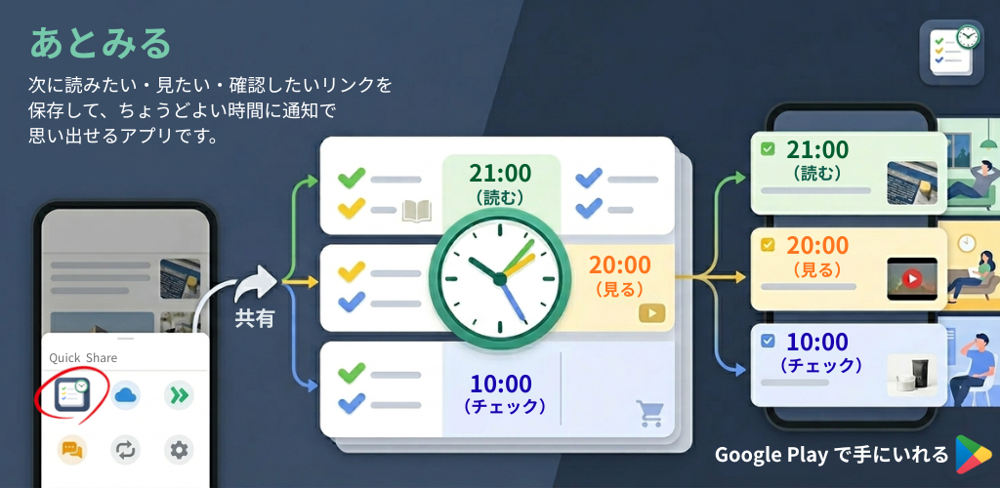
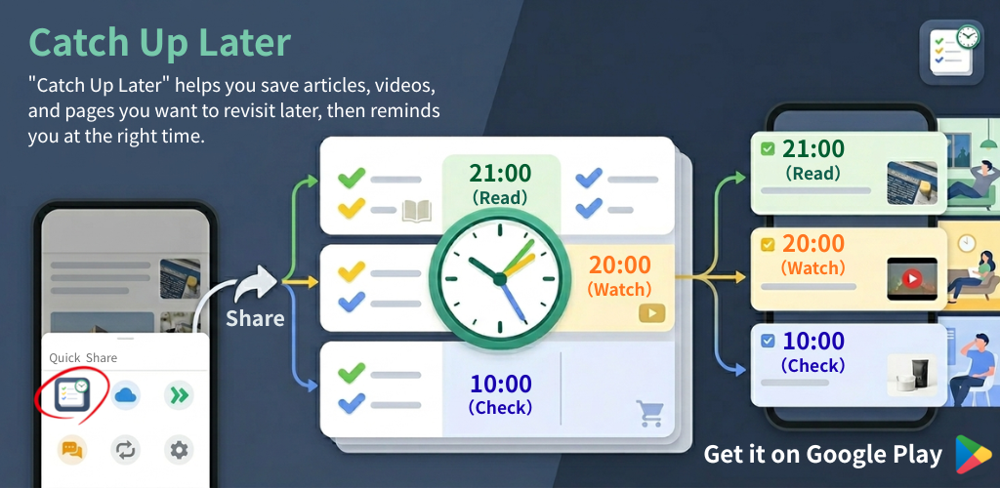
課題
あとみるは「保存場所」ではなく「未来の自分に返すこと」に特化します。
気になった記事を保存しても、ブックマークやメモの奥に入ったまま忘れがちです。
保存時に細かい設定を求められると、結局あとまわしになります。
必要なのは整理よりも、ちょうどいい時間に思い出せるきっかけです。
使い方
Chrome、Safari、YouTube、X、ニュースアプリなどからURLやテキストを共有します。
記事は読む、動画は見る、商品やその他は確認として分類します。
読むものは今夜、見るものは明日、確認するものは週末に通知で返します。
機能
無料版でも、共有保存・自動分類・通知・延期・完了・受信箱一覧のコア体験を使える設計です。
URLやテキストを他アプリの共有メニューから送り、保存画面ですばやく受信箱へ保存できます。
読むものは当日21:00、見るものは翌日20:00、確認するものは土曜日10:00を基本に通知します。
今は見られないリンクを、1時間後、今夜、明日、週末へ延期できます。
読んだ・見た・確認したリンクは完了にして、受信箱を軽く保てます。
通知をタップすると、保存した項目の詳細画面へ戻ってリンクを確認できます。
アプリ内で日本語・英語表示を選べ、サポートやポリシーへの導線も用意しています。
利用シーン
その場で読めなくても、夜に読む予定として通知で戻ってきます。
今すぐ見られない動画を、翌日の落ち着いた時間へ回せます。
ECサイトや確認したいリンクを、週末のチェック対象として残せます。
画面
保存、受信箱、詳細、設定、プロ導線まで、アプリの主要画面を確認できます。
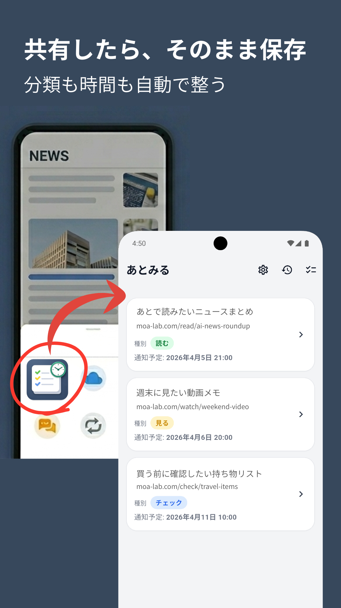
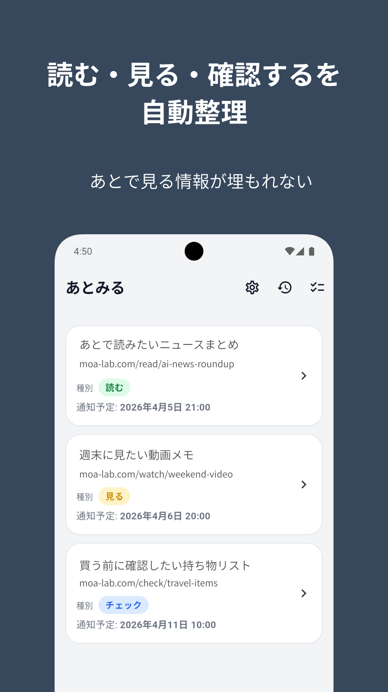
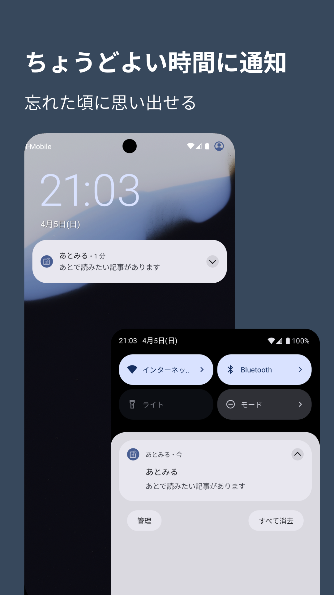
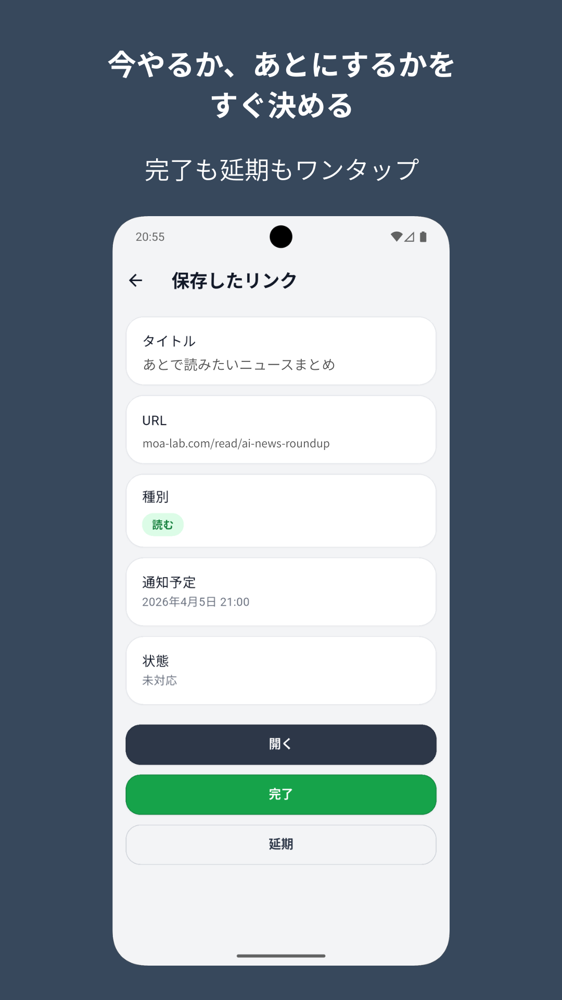
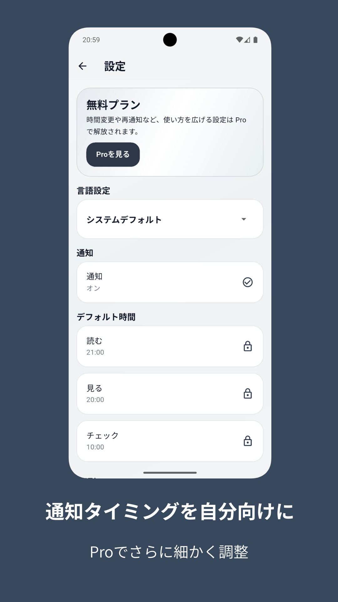
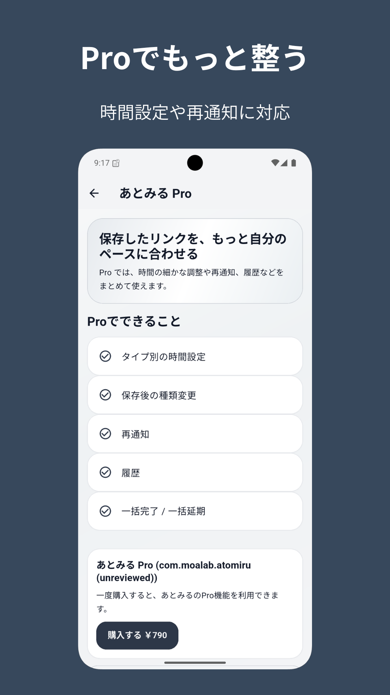
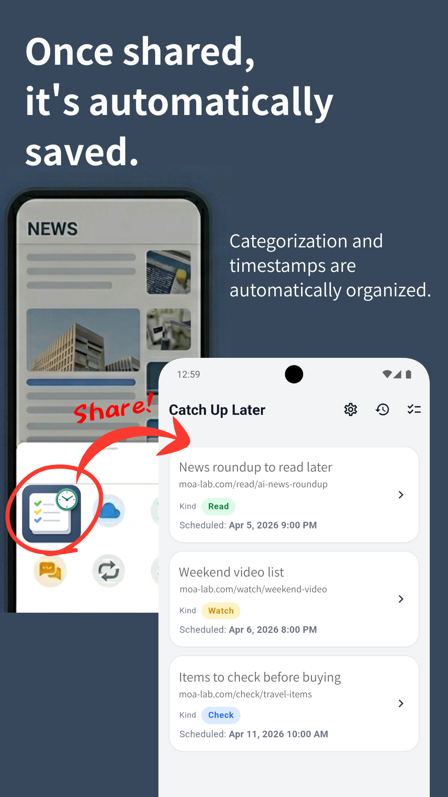
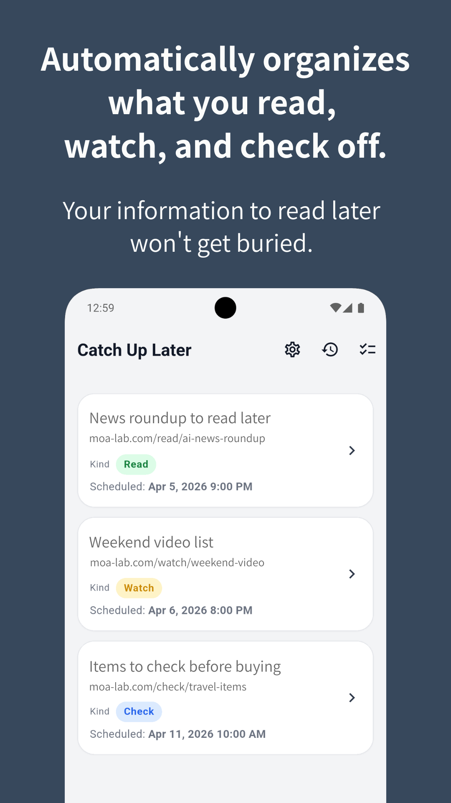
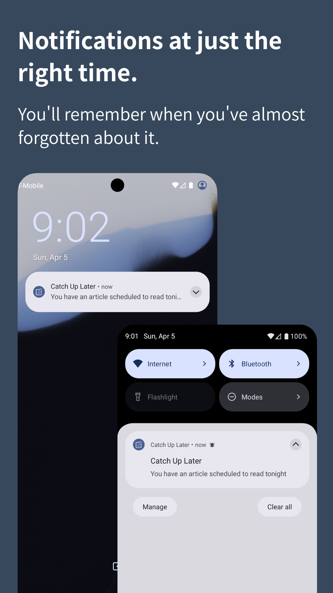
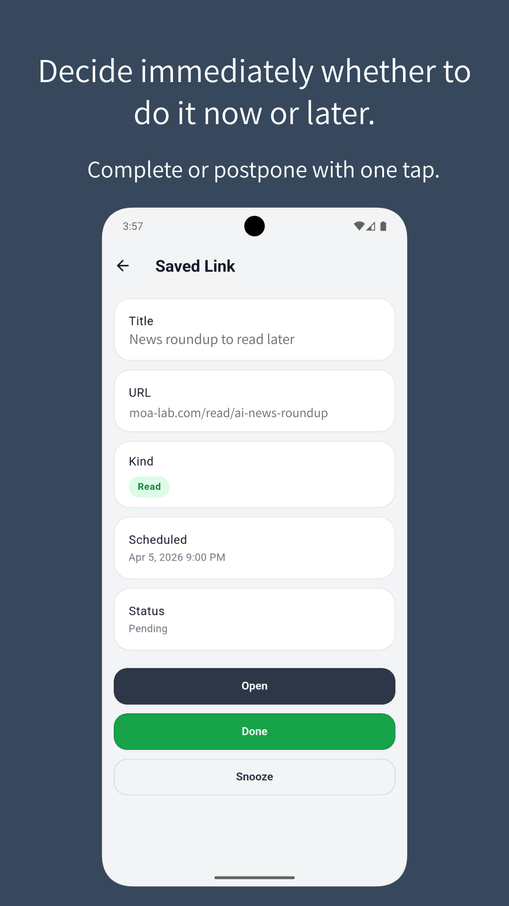
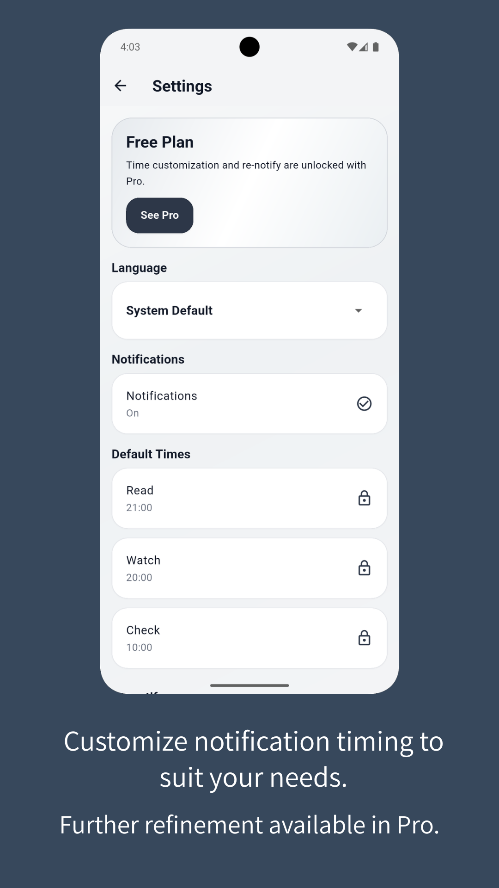
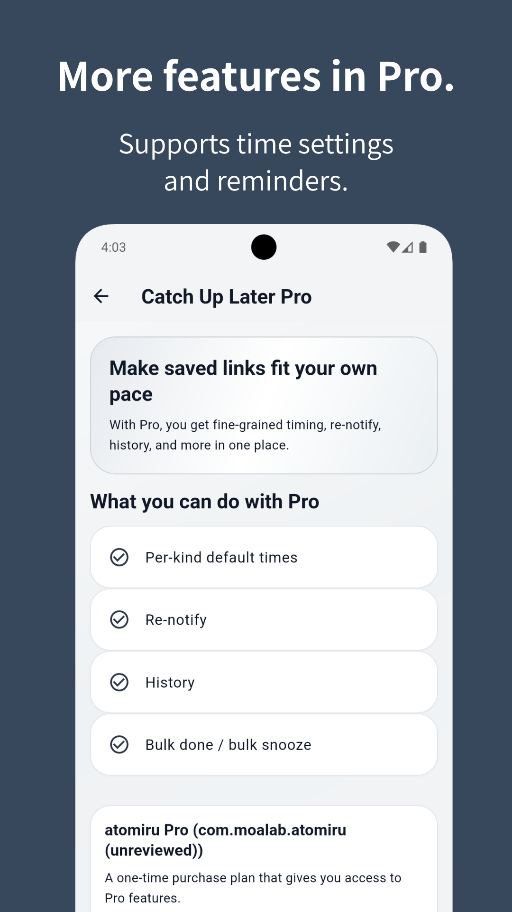
プロプラン
無料でもコア体験を使えます。プロは1回限りのアプリ内購入として、通知設定や管理機能を拡張します。
読む・見る・確認の通知タイミングを、当日・翌日・曜日指定と時刻で調整できます。
完了したリンクを履歴で確認できます。検索画面は現リリースでは非表示です。
1時間後、3時間後、6時間後、12時間後、24時間後から再通知間隔を選べます。
一括完了・一括延期で、受信箱の整理を短時間にできます。
よくある質問
現在、iOS・Android向けにリリース準備中です。ストア公開後、このページのボタンを更新します。
共有から保存、自動分類、自動通知、延期、完了、受信箱一覧、項目詳細などのコア体験は無料版の対象です。
現リリースでは対応しません。まずは「共有するだけで保存し、通知で返す」体験に集中します。
あとみるは、リンク保存を予定に変えるアプリです。iOS・Android版の公開準備を進めています。